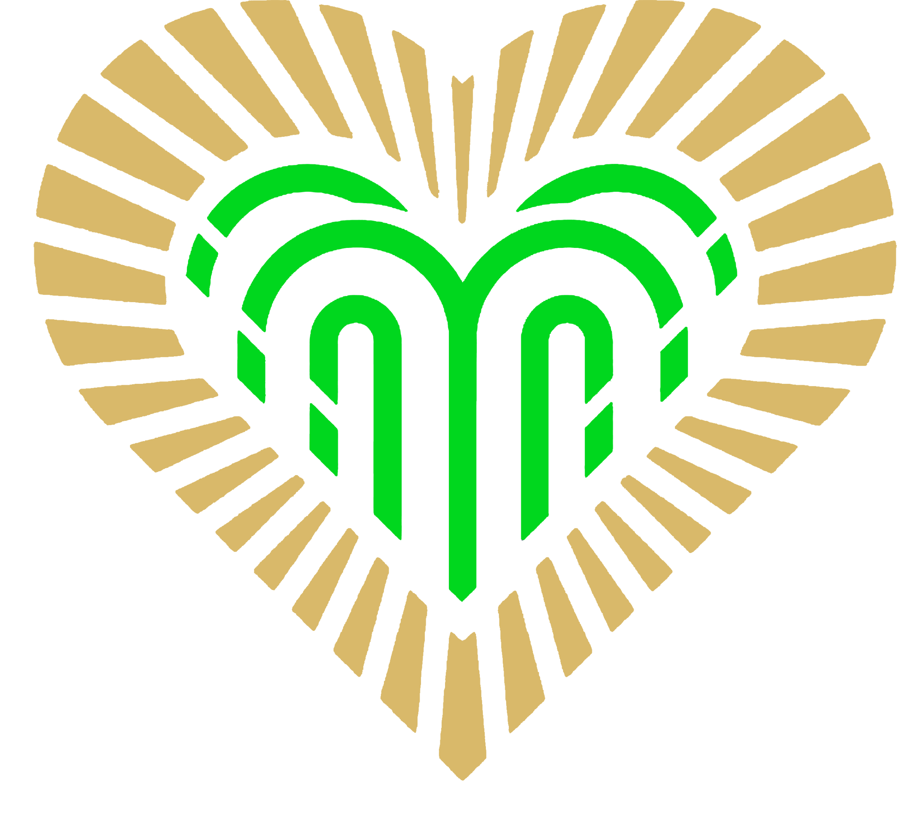

ОТ НАРЗАННОЙ ГАЛЕРЕИ ДО ГРУППЫ СКАЛ “КРАСНЫЕ ГРИБЫ”
Протяженность 9900 метров. Ориентировочное время прохождения 2-3 часа. Самый длинный по протяженности маршрут. Угол подъема на дорожках умеренный и составляет 3-4°. Маршрут не имеет сложных восхождений, но он серьёзен своим расстоянием. Следует вместе со вторым маршрутом до Первомайской поляны и на 27 станции отделяется. Далее по широкой аллее вдоль Первомайской поляны к Долине роз выходит к Березовой аллее и по ней попадает в лесистую Широкую балку, огибая отроги Джинальского хребта ниже Туристической тропы, подходит к санаторию «Заря», и спускается к Долине роз, возвращаясь к Первомайской поляне, где заканчивается на 104 станции. Очень живописный, на протяжении своем изобилует зарослями кустарников, сосновыми борами и дает возможность побыть наедине с природой.
ОТ ФОНТАНА С ЛЯГУШКАМИ ДО ГОРЫ “КРАСНОЕ СОЛНЫШКО”
Протяженность 4900 метров. Ориентировочное время прохождения 2-3 часа. Большая часть дорожек имеет подъем 7°, но на некоторых участках достигает 13°. Общий подъем по вертикали от Нарзанной галереи до Синих камней - З45 м. Начинается от Нарзанной галереи, мимо Царской площадки, минуя Сосновую гору, выходит к Красным камням и далее следует к Серым камням, сливаясь со вторым маршрутом рядом с верхним входом в санаторий «им. Г.К. Орджоникидзе» следует к Красному солнышку, от которого круто поднимается на вершину Синих скал Джинальского хребта на высоту 1158 метров, и заканчивается у Олимпийского комплекса.
ОТ ПАМЯТНИКА ЛЕРМОНТОВУ ДО БЕСЕДКИ “СЕМИ ВЕТРОВ”
Протяженность 5800 метров. Ориентировочное время прохождения 1,5 -2 часа. Угол подъема на дорожках умеренный и составляет максимум 5-7°‚ но большая часть идет под углом 3-4°‚ меньшая - по ровному месту или под небольшой уклон. Подъемы и спуски чередуются со спокойными горизонтальными отрезками. Маршрут идет от Нарзанной галереи, мимо Шахматного домика, через Царскую площадку, поднимается на Сосновую гору, далее к санаторию «Красные камни», затем к Первомайской поляне и павильону Храм воздуха. Подходит к верхнему входу в санаторий «им. Г.К. Орджоникидзе» и оттуда серпантином до Красного солнышка - конечной точке маршрута. Участок по пути следования этого маршрута, длиной около 800 м, проходит сосновым лесом, и в солнечный день вы дышите чудесным воздухом с густо насыщенным запахом хвои.